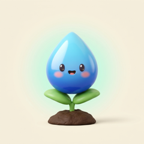

Privacy policy & terms
Dewlie: Plant Watering Reminder · by Flower Heaven
Who we are
Dewlie is made by Flower Heaven and published on Google Play by Junkie Apps. Contact: junkieapps@gmail.com
Your plants stay on your phone
Dewlie keeps everything you add (plant names, photos, soil checks, your first name and settings) on your phone only. We have no servers, no accounts and no sign-in, so we never see or receive your data, and nothing is transferred to other countries.
What we collect
Nothing. The app does not collect, send, share or sell any personal information. It has no ads, no analytics and no tracking. Because nothing is tracked, “Do Not Track” browser or device signals make no difference.
Photos and camera
If you choose to add a photo of a plant, the app asks to use your camera or photo library. The photo is copied into the app on your phone and is never uploaded.
Reminders, ratings and sharing
Daily reminders are scheduled on your phone; turn them off in the app’s Settings or your phone’s settings at any time. The app uses vibration for gentle feedback. If you rate or share Dewlie, Google Play or the app you share with handles that under their own privacy policies.
Your rights (EU/UK GDPR, California CCPA, Canada PIPEDA, Australia Privacy Act and similar laws)
You can see, correct or delete everything Dewlie stores at any time, directly in the app: edit or delete a plant, or use Settings → Reset app. Uninstalling removes it all. Because we hold none of your personal data, there is nothing for us to access, export, sell or delete on our side. For questions or complaints, email junkieapps@gmail.com; you can also contact your local data protection authority.
Children
Dewlie is a general gardening app for adults and is not directed at children under 13 (or under 16 in the EU and UK). It collects no information from anyone.
Terms of use
Dewlie gives general watering guidance based on your soil checks. Plants differ, so please use your own judgement too. The app is provided as is, free of charge.
Open-source software
Dewlie is built with open-source packages; see the open-source licenses.
Changes to this policy
If this policy changes (for example when optional paid features or sign-in are added), we update this page before the change reaches the app and show the new effective date below. Important changes are also announced in the app’s update notes.